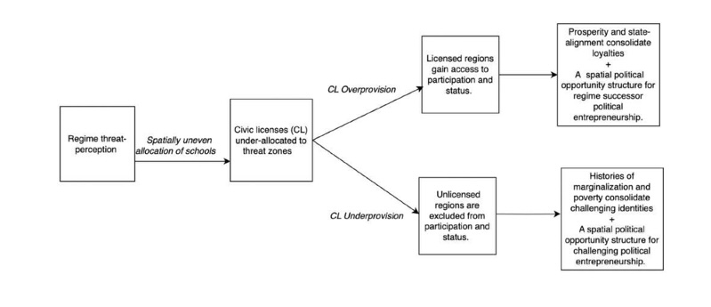
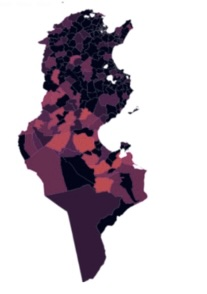
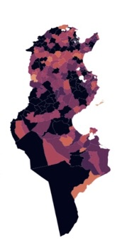
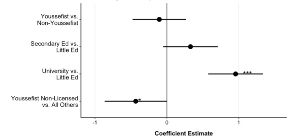

Research
My research examines political development, state capacity, and identity formation in postcolonial contexts, with regional emphasis on the Middle East and North Africa. I investigate how autocratic states strategically allocate public goods—particularly education—to manage opposition and engineer political cleavages that persist across generations.
Dissertation
Civic Licensing: Education, Autocracy, and Political Identity in Postcolonial States
This dissertation tests the proposition that postcolonial governments in the Middle East and North Africa (MENA) and in Africa and Asia more broadly unevenly supplied secondary schooling to facilitate autocratic governance. Such regimes concentrated human capital, upward mobility, and social status in pro-regime and neutral areas. Conversely, autocracies withheld schools from historically oppositional areas, relatively undersupplying districts with histories of political rebellion against the incumbent regime.
I introduce and empirically investigate the process of 'civic licensing', a macro-level theory connecting anti-regime threats at independence to the allocation of secondary schools under autocracy and downstream political cleavages thereafter. Civic licenses are state-distributed credentials that serve as a prerequisite for access to a meritocratic stratum with associated club benefits and status identity. In postcolonial states, I posit that secondary education functioned as a civic license, as government policy guaranteed employment to college graduates. The politicized provision of secondary education under postcolonial autocracy leaves behind spatially divergent status differentials, political identities, and a political cleavage structure across provisioned and punished zones.
I reveal a robust negative association between anti-regime threat at independence and educational provision thereafter. Testing individual-level implications, I show that educational provision patterns at independence drive variation in attitudes, electoral behavior, and protest participation in the postcolonial Maghreb. The study highlights scarce education supplied at independence as an understudied driver of political identity and status formation in postcolonial states.
Empirical Scope
- 6,047 geolocated schools in Tunisia (1880–2024)
- 1,143 nationalist contentious events in Tunisia (1950–1956)
- 1,165 nationalist contentious events in Morocco (1950–1956)
- Nationally representative survey data from Tunisia (N = 1,004)
- Comparative evidence from Senegal, Cameroon, and other MENA regimes




Publications
Working Papers
Selected Works in Preparation
- Military Recruitment and Subsequent Mobilization: Evidence from Algeria and the Raj (With Shourya Sen)
- Ideology and Shifts in State Territory: The Case of High Nasserism and the United Arab Republic
- Internationalization and Contentious Politics: Late Colonial Mobilization and International Diplomacy